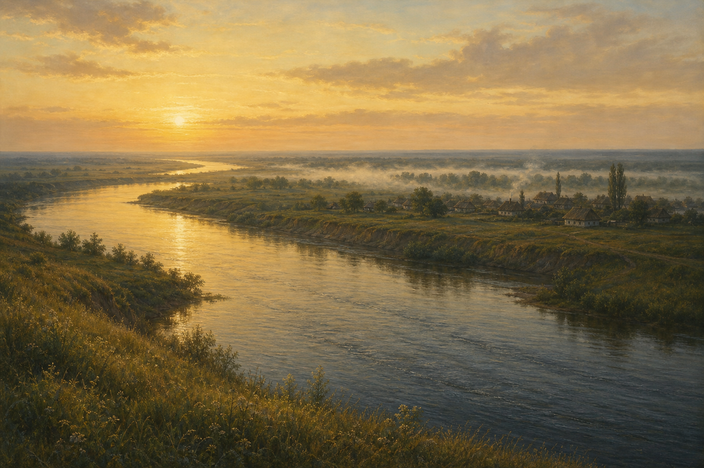
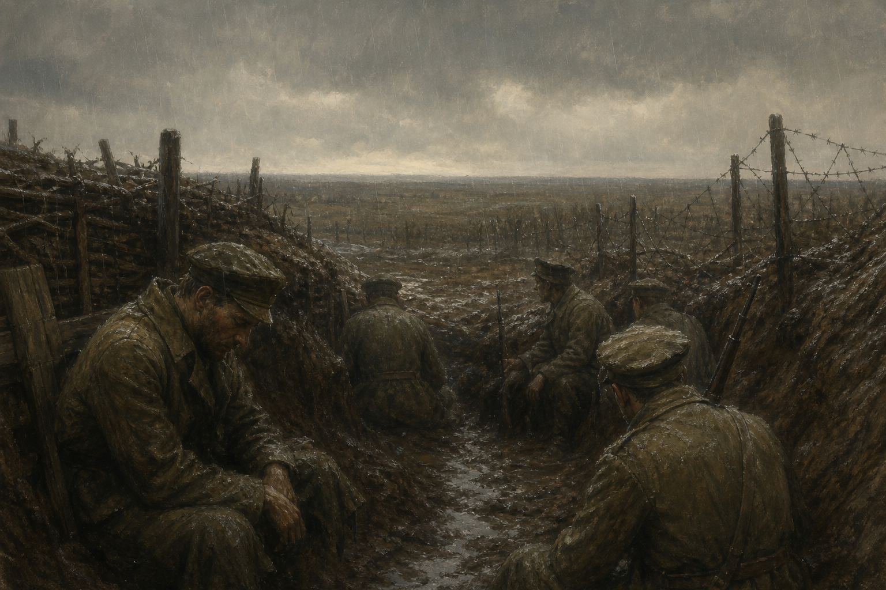
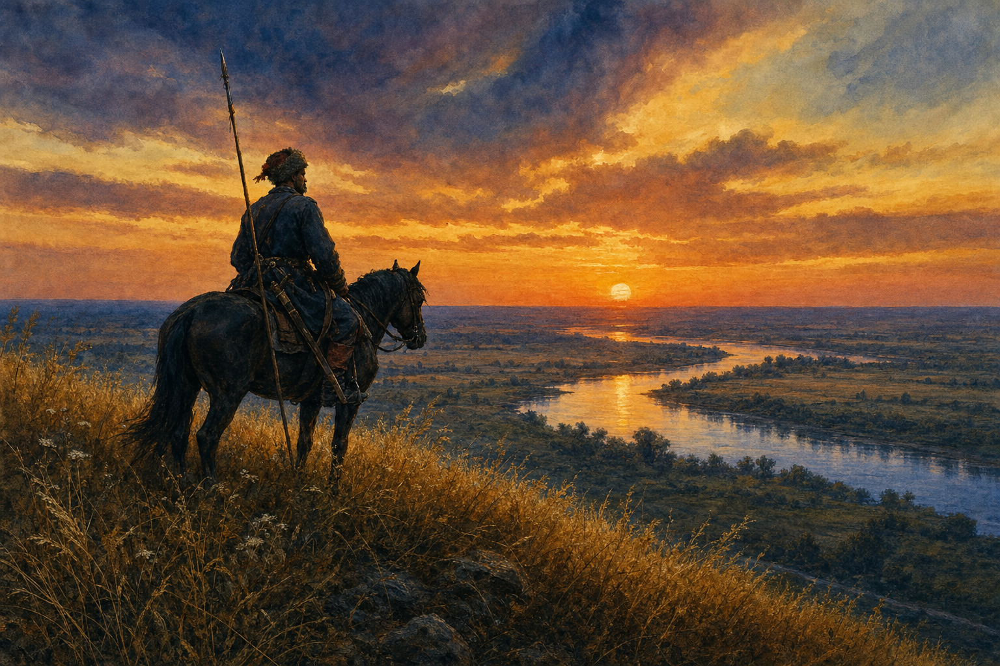

And Quiet Flows the Don · Тихий Дон
米哈伊尔·肖洛霍夫 · 整理日期：2026年07月

《静静的顿河》是苏联作家米哈伊尔·肖洛霍夫（1905—1984）的史诗巨著，创作历时十四年（1926—1940），1965 年获诺贝尔文学奖。小说以1912—1922 年的俄国为背景，通过顿河哥萨克麦列霍夫家族的兴衰，写尽第一次世界大战、二月革命、十月革命与国内战争对普通生命的碾压。
全书以主人公葛利高里·麦列霍夫的命运为主线：他本是顿河畔富足哥萨克家庭的青年，骁勇、正直，却在战争与革命的洪流中，于红军与白军、妻子与情人、正义与杀戮之间反复摇摆，最终失去一切，只带着幼子回到故乡。顿河依旧静静流淌，而人已被时代撕碎。
肖洛霍夫以诗一般的笔触写草原、河流与哥萨克习俗，又以冷峻的写实写战争的荒诞与政治的残酷。它被誉为「20 世纪的《战争与和平》」，拒绝简单的非黑即白，呈现历史对个体命运的裹挟。
静静的顿河，我们的父亲，顿河伊万诺维奇，养育我们，给我们喝，给我们吃，我们深深地感谢你！—— 哥萨克民歌
【第一部 · 家园与爱情】
1912 年，维奥申斯卡亚镇的麦列霍夫家自足富裕。葛利高里爱上有夫之妇阿克西妮亚，丑闻爆发后遭父亲强逼娶娜塔莉亚——一个他起初并不爱的姑娘。激情与责任撕扯，他与阿克西妮亚私奔帮工，娜塔莉亚自杀未遂。平静生活被情欲与舆论打碎。
【第二部 · 一战与觉醒】
1914 年一战爆发，葛利高里参军，目睹战壕、杀戮与荒诞。负伤住院时结识共产党员，对革命理念产生共鸣。此时他与阿克西妮亚的孩子夭折，阿克西妮亚沦为地主情妇；他愤而回归家庭，娜塔莉亚为他生下双胞胎。战争改变了他，也改变了一切。

【第三部 · 革命与倒戈】
1917 年革命爆发，多数哥萨克站在白军一边。葛利高里一度加入红军，但目睹红军的残暴后再度倒戈，参与反布尔什维克起义。他与阿克西妮亚复合，娜塔莉亚再次自杀，这次未能生还。立场反复，他既不被白军完全信任，也被红军视为叛徒。
【第四部 · 流亡与回归】
红军镇压起义，葛利高里被迫逃亡，途中又一度加入红军，终因立场反复被开除军籍。娜塔莉亚的兄长——布尔什维克——执意追捕他。最终阿克西妮亚中弹身亡，葛利高里孑然一身，抛弃一切，带着与娜塔莉亚所生的儿子米沙，回到顿河边上。儿子是生活留给他的全部，是他与大地惟一发生联系的东西。

主人公。鹰鼻、蓝眼、高颧骨的哥萨克青年。勇敢、正直、骁勇，又有哥萨克的偏见与局限。在红军与白军间反复，在两个女人间摇摆，是时代的英雄，也是受难者。
葛利高里的挚爱。命运多舛，遭丈夫毒打，与葛利高里几度离合，最终中弹身亡。代表激情、自由与无法保全的爱情。
葛利高里的妻子。勤劳善良，深爱他却不被珍惜。两次自杀，第二次成功。为他生下波柳莎、米沙和双胞胎，是家庭与责任的象征。
一家之主，老派哥萨克。强逼儿子娶娜塔莉亚，代表传统家长权威与旧秩序。
葛利高里的哥哥与妻子妲丽亚、妹妹杜妮亚希珈，构成麦列霍夫家族的群像。小说结束时，家族支离破碎，仅葛利高里、儿子米沙与妹妹杜妮亚存活。
半农半军的氏族社会，以精湛骑术与骁勇著称。历史上多效忠沙皇，革命年代分裂为红、白两派，是小说真正的「集体主人公」。
【历史与个人的撕扯】
葛利高里不知道自己该站哪一边。他凭努力从普通士兵升为军官、起义指挥官，内心却始终徘徊。肖洛霍夫不写「正确的一方」，而写普通人在宏大叙事中的迷失——历史没有给他留出中立的位置。
【土地与顿河】
顿河不是背景，而是精神母体。哥萨克对土地、河流、草原的依恋，与战争带来的流离形成对照。结尾葛利高里回归，是对大地最后的皈依——政治理想全部破灭之后，只剩父子与故乡。
【爱情与命运】
葛利高里在两个女人之间摇摆，既未能保全阿克西妮亚，也未能给娜塔莉亚幸福。肖洛霍夫以悲剧笔法写爱情——不是紫红色的花朵，而是道旁迷人的野花，在动荡年代格外脆弱。
【战争的异化】
一战战壕的泥浆、国内战争的流窜与杀戮，将人变成「在草原上流窜、但要常常回头看看」的困兽。战争不分红白的荒谬，在肖洛霍夫笔下同样冷峻。
不要向井里吐痰，也许你还会来喝井里的水。—— 书中谚语
种风的人，收获的是风暴。—— 书中谚语
人是为了自己的希望才活着的。—— 葛利高里
不管把狼喂得多么好，它还是想往树林子里跑。—— 书中谚语
草原虽然宽广，道路总是狭窄的。—— 叙述者
生活总是用自己的不成文的法律支配着人类。—— 叙述者
女人的晚来的爱情并不是紫红色的花朵，而是疯狂的，像道旁的迷人的野花。—— 叙述者
在荒淫无耻的岁月里，不要深责自己的兄弟。—— 书中谚语
我们只有一条战术：就是在草原上流窜，不过要常常回头看看。—— 内战中的哥萨克
青草淹没了坟墓，时间吞噬了悲伤。清风扫去征人的脚步，岁月舔尽了创痛……上帝赐给我们大家践踏青草的时间是很有限的……—— 叙述者
一九一六年。十月。夜。风和雨。林木繁茂的低地。一片丛生着赤杨的沼泽边上是战壕。前面是一层一层的铁丝网。战壕里是冰冷的稀泥……—— 第二部开篇（著名段落）
人们在那里决定自己和别人的命运，我却在这里牧马。应该逃走，不然就会越陷越深，无法自拔。—— 葛利高里
读《静静的顿河》，首先被震动的不是政治立场，而是顿河本身——那条静静流淌的河，与草原上被撕碎的人生形成巨大反差。葛利高里不是英雄，也不是叛徒；他是一个在正确与错误都已失效的年代里，无法辨明方向的人。这种「辨不明」比任何立场都更接近真实。
肖洛霍夫的伟大，在于他拒绝用革命或反革命的单一 lens 裁切历史。红军有残暴，白军有荒谬，普通人只是在「流窜」中求生。那句「种风的人，收获的是风暴」，既是对时代的预言，也是对个体选择的警示。
爱情线同样令人心碎。葛利高里未能保护好任何一个他爱的人——不是因为他不爱，而是因为时代不允许他保全私人的幸福。娜塔莉亚的两次自杀、阿克西妮亚的中弹，都是这部史诗中最沉痛的注脚。
结尾葛利高里带儿子回到顿河，与《活着》中福贵与老牛、与《飘》中斯嘉丽与塔拉土地，形成某种跨越时空的呼应：当一切政治理想与情感纠葛都化为灰烬，人最终回到大地。每个人心里都有自己的顿河——它的四季流转，像肖洛霍夫笔下的草原一样，带着原始而饱满的生命力，也带着无法逃脱的历史重量。